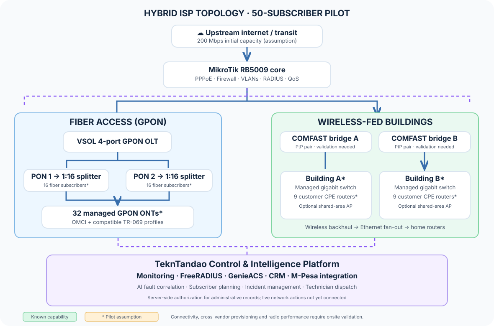

Proposed architecture · Engineering reference
Internet that monitors itself, identifies problems early, and keeps customers informed.
A hybrid fiber + wireless ISP designed around centrally managed access equipment, MikroTik routing, GPON optical distribution, COMFAST wireless links, and a secure management platform for customer experience and operations.
Target pilot subscribers
Fiber customers + wireless-fed building customers
Illustrative shared upstream starting capacity
Network architecture
The diagram is an implementation concept, not a live network map. Solid arrows indicate customer traffic; dashed arrows denote management, telemetry and business-system integration.

Device compatibility, exact port behavior, antenna link throughput, ONT/OLT interoperability, optical power budgets and customer counts require bench tests and site validation. The central platform does not sit on the customer packet-forwarding path.
What the platform will manage
Network operations
Read-only telemetry collection, incident correlation, fiber and wireless link health, uptime and service-quality reporting.
Subscriber lifecycle
Controlled provisioning requests, PPPoE and RADIUS policies, service-package records and device assignments, subject to network adapters.
Payments and support
M-Pesa transaction reconciliation, renewals, work orders, automated notifications and an AI-assisted customer support experience.
Verified components vs proposed integrations
- MikroTik RouterOS: PPPoE, RADIUS, monitoring and APIs.
- VSOL GPON OLT and ONT management capabilities depend on the exact hardware and firmware.
- GenieACS offers an API for compatible TR-069 devices.
- COMFAST catalogue identifies wireless bridges, routers, APs and switches.
- Specific COMFAST models' SNMP, TR-069 and management APIs.
- Cross-vendor optical provisioning and VLAN transparency.
- Kenyan type approval, site surveys and usable link capacity.
- Live provisioning, router mutation and payment integrations before production enablement.